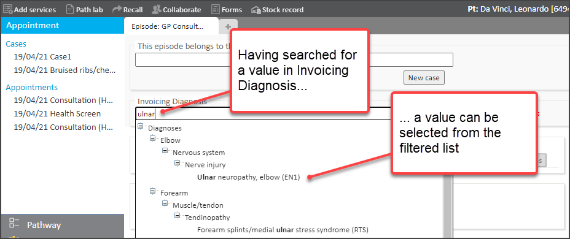
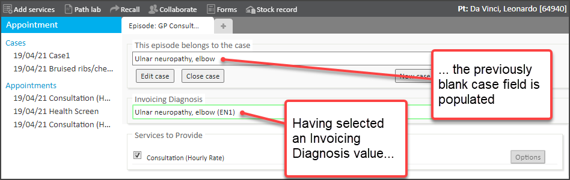
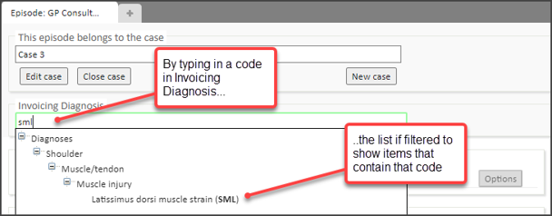
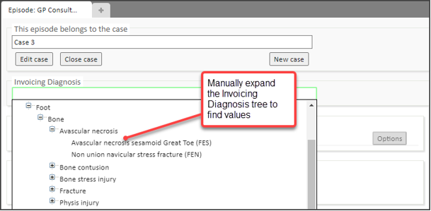

On certain types of Clinical form for an appointment, it is possible to record an Invoicing Diagnosis value.
With the release of a new Meddbase version (April 2021), it is possible to navigate and select through a hierarchical tree of these codes.
This article presents a walk-through of how to use Invoicing Diagnosis on a Clinical form. It also provides some hints and tips on what can impact your ability to select and use Diagnosis Codes.
To apply an Invoicing diagnosis for an existing appointment with no case:-
1. Go to the required appointment for the patient (via … Patient Record > Appointment History > Appointment Home > Consultation)
2. Select Consultation
3. In the Invoicing Diagnosis field, type the name (or part of the name) for the diagnosis
4. Select the required Diagnosis item from the filtered list


The Invoicing Diagnosis value is saved. Also, by having selected the Invoicing Diagnosis value, the previously blank Case field is populated with a Case name that matches the Invoicing Diagnosis description.
5. Continue through the Clinical form as required
Below are some useful hints and tips about successfully working with Invoice Diagnosis codes.
To be able to select Invoicing Diagnosis values on a Clinical Form for a patient appointment, the following needs to be in place:-
The walk-through example above noted how you can type in part of the description for an Invoice Diagnosis to find and select the value you need. Alternatively, you can :-

